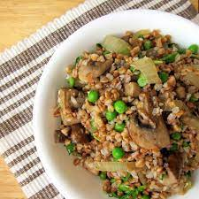

Buckwheat

Description
Buckwheat is one of the healthiest carbs out there. You can add anything to it!
This recipe uses an oven whereas buckwheat is usually prepared by boiling.
Ingredients
- Buckwheat
- Onions
- Red Peppers
- Carrots
Steps
- Wash the buckwheat
- Peel onions, red peppers, and carrots
- Cut onions and peppers into cubes, grate carrots
- Preheat oven to 190 degrees C and prepare a baking tray
- Fry onions and carrots on medium heat on a hot oiled pan for about five minutes
- Add peppers and salt and pepper. Stir and cook for two more minutes
- Add buckwheat to the frying pan, mix with vegetables and transfer all to baking tray
- Fill the tray with water, cover with foil, and bake in preheated oven for 30 minutes
- Bon appetit!